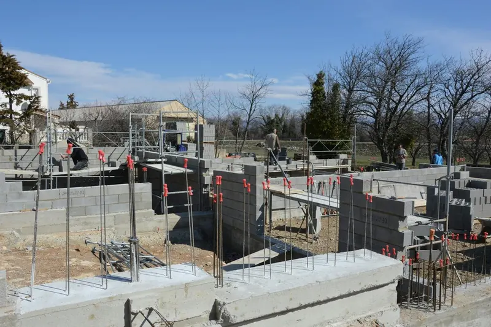

Quick Answers
Insulate the crawl walls or the floor above?
Pick one boundary and commit to it. Building Science Corporation says a crawl should be either vented and outside the house or sealed and inside it, never half of each. Sealed crawls get insulated perimeter walls and band joists. Vented crawls keep insulation in the floor, at R-19 under Tennessee code.
What R-value does Tennessee want under a house?
That depends on which surface carries the insulation. Tennessee's amended code calls for R-19 in a floor over a vented crawl, or R-10 continuous or R-13 cavity insulation on crawl space walls. ENERGY STAR's Zone 4A recommendations land on those same figures rather than going higher.
Which foam belongs on crawl space walls?
Closed cell. DOE's spray foam guide lists it as preferred for foundations and below-grade spaces and notes it will not absorb water, while it marks open cell as not acceptable there. Closed cell runs about R-6 to R-7.4 per inch, so roughly 2 inches clears the R-10 wall minimum.
Signs Your Crawl Space Needs Insulation
- Floors feel cold underfoot all winter, worst along outside walls.
- Fiberglass batts hang from the joists or lie on the dirt.
- The batts you can reach feel damp or look dark and stained.
- Ductwork under the house sweats or shows rust spots in summer.
- The house smells musty after a stretch of humid weather.
- Foundation vents stay open year round over a bare dirt floor.
How Crawl Space Insulation Works
Insulation by itself will not dry out a damp crawl, so the first decision is where the boundary goes. For a sealed crawl we insulate the walls and band joist, and the ground liner and drying method are covered on our crawl space vapor barrier and encapsulation page.

Pull the failed batts
Wet, moldy or fallen fiberglass comes down, gets bagged and leaves the property. Leaving it in place would hold moisture against the framing.
Seal the band joist
DOE's crawl space guide recommends 1.5 inches of direct-applied closed cell at the band joist. That seals the sill plate, the rim board and every wire or pipe hole through it. Details are on our rim joist insulation page.
Spray the perimeter walls
Building Science Corporation lists crawl wall options from 2 inches of XPS board at R-10 up to 3 inches of closed cell at R-18. On concrete block we prefer spray foam, because it bonds to the rough face and seals mortar joints and cracks that rigid board would bridge over.
Leave a termite inspection strip
Where termite pressure exists, DOE advises keeping a 3 inch inspection gap. We stop the foam short at the top of the foundation wall so a pest inspector can still look for mud tubes.
Cover what code requires
A crawl entered only for service allows a light ignition barrier over the foam, such as 1/4 inch wood structural panel, or a product tested to stay exposed. We tell you which applies before work starts.
Crawl Space Insulation Cost in Knoxville
Wall height and perimeter set the foam quantity. Removing old batts, a low or cluttered crawl, and piers or plumbing in the way add labor. These national guide figures were checked in October 2026 and are not our prices.
| Crawl space job | National range | Source |
|---|---|---|
| Crawl space spray foam project | $1,000 to $5,900 | HomeAdvisor |
| Crawl space spray foam project | $2,000 to $4,000 | HomeGuide, 2026 |
| One inch of closed cell on a wall | $1.25 to $2.90 per sq ft | This Old House (Apr. 2026) |
| Three inches of closed cell on a wall | $3.75 to $8.70 per sq ft | This Old House (Apr. 2026) |
At the 3 inch rate, every 100 square feet of crawl wall comes to roughly $375 to $870. TVA EnergyRight's rebate list includes no floor or crawl space insulation rebate, so plan the budget without one. Our insulation cost guide has more ranges, and a free estimate gives the real number. Call (865) 564-7823.
Crawl Spaces in East Tennessee
Fiberglass in a vented Southern crawl is set up to fail. Building Science Corporation points out that the ground under a house is usually colder than the summer dew point outside, so water condenses on the polyethylene ground cover and on the underside of floor insulation. Damp batts lose their grip, sag and end up on the dirt.
Winter brings the opposite complaint. January lows average 30.0 F at McGhee Tyson Airport, and with vents open that cold air sits right under the subfloor. Insulated perimeter walls keep the whole crawl, and the floor above it, warmer.
Ducts raise the stakes. According to DOE's Home Energy Score guide, duct leaks in an attic or crawl can waste a fifth or more of the energy spent heating and cooling, and many Knoxville homes run their supply trunks under the floor.
What the Free Crawl Space Estimate Includes
- Moisture meter readings on joists, sill plates and subfloor.
- Perimeter and wall height measurements, plus crawl clearance and access.
- A look at existing batts, ducts, plumbing, vents and any standing water.
- Notes on termite evidence or damaged wood we find along the way.
- A written price for wall and band joist foam, with liner options listed separately.
Materials and Specs
Under a sealed crawl, these are the targets we check our work against. They come from Tennessee's code table, DOE field guides and one foam maker's data sheet.
- Crawl wall: R-10 continuous or R-13 cavity insulation, the Tennessee Zone 4 minimum.
- Floor over a vented crawl: R-19, with the batt pressed tight to the subfloor and supported so it cannot sag.
- Closed cell on block walls: about 2 inches at R-6 or more per inch aged clears R-10, and Building Science lists up to 3 inches, about R-18.
- Pass or lift thickness: 1 to 2 inches per pass on one data sheet, with the block at least 5 F above the dew point.
- Band joist: 1.5 inches of direct-applied closed cell over the rim board and sill plate.
- Termite inspection gap: 3 inches of bare masonry at the top of the wall where termite pressure exists.
- Wood moisture content: a target below 17 percent on joists and sill plates, checked with a moisture meter.
Crawl Space Insulation FAQ
Related Services
- Crawl space vapor barriers: the ground liner, sealed vents and drying method that complete a sealed crawl.
- Rim joist insulation: sealing the band where the floor framing rests on the foundation.
- Closed cell spray foam: the dense foam we use on crawl walls and other damp surfaces.
Where We Do This Most
- Oak Ridge: the median home dates to 1965 and nearly a third were built in the 1940s, long before crawl walls were insulated.
- Alcoa: the company town built 700 homes between 1917 and 1920, and that housing still anchors the older neighborhoods.
- Lenoir City: 692 homes date from the 1950s and 550 from 1939 or earlier, a deep stock of older crawls.
- Morristown: the 1960s and 1970s are the city's two biggest building decades, and ranch homes from that era were usually built with open foundation vents.
- Powell: homes on the Beaver Creek valley floor, between Copper Ridge and Beaver Ridge, sit on low creek-valley ground.
Warm Floors Start Under the House
If the floors are cold or the batts are on the ground, we will crawl under, take readings and tell you plainly what it needs. Call (865) 564-7823 for a free estimate on your crawl space.